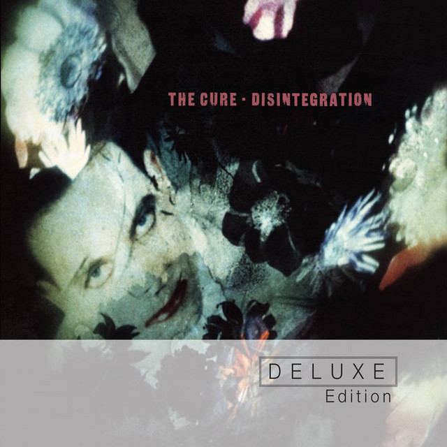

The Cure - Disintegration



Información del álbum facilitada por discogs.com:
Fecha de lanzamiento: 1989
Géneros: Rock, Pop
Estilos: New Wave, Darkwave, Alternative Rock
Pais: Sweden
Votos: Media de 4.0 con 33 votos
Sello: Planet Rhythm Records
Tracklist:
A1. Plainsong 5:16
A2. Pictures Of You 7:28
A3. Closedown 4:21
A4. Love Song 3:31
A5. Lullaby 4:12
A6. Fascination Street 5:17
B1. Prayers For Rain 6:07
B2. The Same Deep Water As You 9:23
B3. Disintegration 8:24
B4. Untitled 6:30